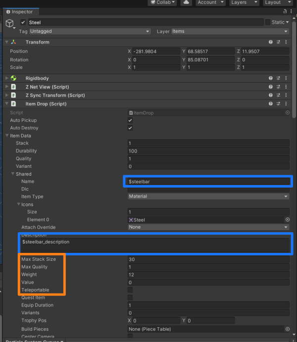

Developing Assets with Unity
New Assets can be created with Unity and imported into Valheim using Jötunn. In this tutorial we will copy Valheim's "Iron Bar" and create a custom material "Steel Bar" to be used as a new item conversion. The final result can be downloaded and examined in our mod example project.
Software Requirements
Creation Tools
- Visual Studio - Editor for our plugin code
- Unity 2022.3.17 - Game engine that Valheim runs in
Game Mods (install these into your game as our mod has dependencies on them)
- Jötunn, the Valheim Library - Mod with convenience methods we will use
Summary of Steps
To add an item to the game, a mod maker will have to:
- Create an item asset in Unity
- Connect the required Valheim game scripts to the asset so that the game can interact with it
- Build the item into an Asset Bundle for importation into the Visual Studio project where they build the mod
- Retrieve the asset from the bundle in the mod code
- And add that item (and relevant recipes to make it) to the game's object database when it launches
Unity Editor Setup
Valheim uses Unity Version 2022.3.17
If you don't have Unity already installed, download UnityHub from their website or install it with the Visual Studio Installer via Individual Components -> Visual Studio Tools for Unity. You will need an Unity account to register your PC and get a free licence. Create the account, login with it in UnityHub and get your licence via Settings -> Licence Management.
We will want to have two instances of the Unity Editor running, working in two different projects. This helps us separate the original, coyprighted content from the game and our own assets as well as making new rips of updated Valheim versions much easier to handle, since you won't overwrite your custom assets or have to move them to the new rip.
Ripped Game Project
To create a ripped project from the original game, follow the step-by-step instructions on the Valheim-Modding Wiki. After ripping the project you can open this as a reference on the vanilla prefabs or to copy parts of the assets you want to use to your mod stub project.
Mod Stub Project
Jötunn provides you with a barebone project stub that also includes a Unity project. You can get this project in its entirety from our github. If you haven't already setup your dev environment, see our step-by-step guide on how to do this.
Before opening the Unity project, copy the following files (especially the .meta files) from your ripped Valheim project at <RippedValheimProject>\Assets\Plugins folder into your stub project's <JotunnModStub>\JotunnModUnity\Assets\Assemblies folder (create that if necessary).
If you are using the ModStub, you can compile the C# project instead, which will copy the necessary files for you.
See the CopyToUnity Task
- all assembly_*.dll files
- PlayFab.dll
- PlayFabParty.dll
- PlatformTools.Core.dll
- PlatformTools.Common.dll
- ConnectedStorage.dll
- gui_framework.dll
- com.rlabrecque.steamworks.net.dll
- SoftReferenceableAssets.dll
This allows us to exchange prefabs between the two projects without losing the references to the added components.
You can also copy the dll files from your game folder <ValheimInstall>/valheim_Data/Managed and recover the missing references using e.g. the NG Missing Script Recovery tool.
Copy the files directly to the new project via the file system - don't import the assemblies via Unity.
After you copied the files, open UnityHub, add the JotunnModUnity project and open it.
Working the New Asset
In this use case you only need to edit some line items on the prefab that we are manipulating. So locate the Iron bar made by IronGate in the ripped game project. Highlight the item and press CTRL+D to duplicate it in Unity. Double click the copied Prefab to open it in the inspector. This is our new working base for the Steel Ingot. Now change the values of the ItemData component according to your needs:

- The name: as you can see its a token that is prefixed with $ . This dollar signifies this is a token due for replacement by localised content. In my case I changed the name to $steelbar
- Icons: Its an array that is the same size as the number of variant you'll want for you item, if there is only 1 variant, have a single entry in there and drag and drop your 2D Sprite at the Element 0 field. (IF YOU FORGET THIS YOUR INVENTORY WILL BE VERY ANGRY WITH YOU UPON PICKUP OF THE ITEM)
- Description Token: same thing for the name, mine is $steelbar_description
- Item Type: The item type in use here is extremely important to our in-game use case. Since we are creating a Material that is what I should pick here. The attach override is not important for this example.
- Max Stack size: Determines the maximum the player can have in 1 stack in the inventory
- Weight: The weight factor for a single unity
- Teleportable: Whether or not this item can pass through a teleporter
Porting the Asset
Port the item into the new stubbed unity project, with ALL linked assets (mesh, texture, sound, material, etc). You can do this by creating a .unitypackage export from the ripped project and importing that again in the stub project. Do so by right-clicking the Prefab and selecting Export Package. Dont include the scripts in the package since we copied these before. If you want to copy single assets you can also drag and drop them from one unity editor instance to the other. The stub project will be the project from which we make the Asset Bundle to package with our plugin.
Open the prefab by double-clicking it. If you followed the project stub steps correctly, all references to the vanilla scripts should still be there. If this is not the case, your prefab now looks something like this:

You will have to fix those script references first. Be sure to always fix the script references for all items that you've brought into the new project including ItemDrop, etc. Doing this manually unfortunately clears out all values previously set on those components. To avoid this, you can use the Unity package NG Script recovery. Install it and let NG fix the references. We won't go into details of that process, so please read up on NG usage on their website.
Before we actually create our bundle, though, you might be wondering - what should I do with copied vanilla assets if I still want to use them on my prefab? I'd have to be worried about copyright infringement, bad.
The solution is easy though, as we introduce a Mock object system in Jötunn. Click the link to learn more about resolving native asset references at runtime.
AssetBundle
Now we want to make our AssetBundle so that we later inject it with our BepInEx plugin dll.
Let's create an Asset Label for the AssetBundle that we'll call steel:
Now, let's use the AssetBundle Browser made by Unity to create our AssetBundle.
Window -> AssetBundle Browser -> Build Tab -> Build
We now want to put our AssetBundle into the Visual Studio project so we can use it later with our custom Jötunn code. Alternatively you can just build your asset bundles directly into the VS project path.
Implementing your asset ingame using JVL
If you have not done so yet, please ensure you have completed the relevant visual studio setup. You can then follow the Asset importing guide, Item Creation, and Localization tutorials.